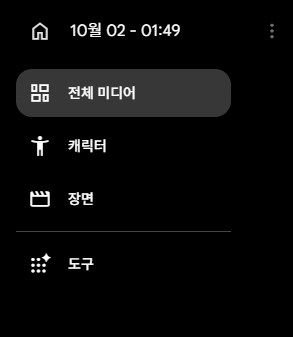
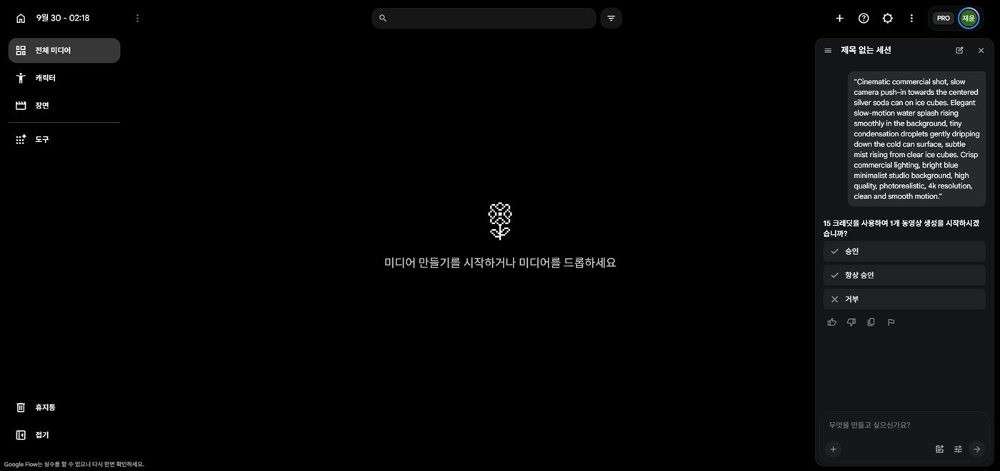

DAY 06AI 프롬프트 엔지니어링 2
AI로 짧은 애니메이션 만들기 — 스토리부터 5장면 영상까지
스토리를 기획하고, 주인공 캐릭터를 만들고, 그 캐릭터를 Google Flow 에이전트에 첨부해 장면마다 영상을 만듭니다. 장면 5개를 이으면 30초~1분짜리 애니메이션 한 편이 됩니다.
1.오늘의 수업 & 진행 순서
지난 시간에는 제품 하나로 한 장면을 움직여 봤습니다. 오늘은 이야기가 있는 여러 장면을 만듭니다. 이때 가장 큰 문제는 "장면마다 주인공 얼굴이 바뀐다"는 것입니다. 오늘은 이 문제를 기획과 캐릭터 고정으로 해결합니다.
2.시작 전에 — AI 작업은 기획이 80~90%
영상 제작은 엔터를 누르는 순간, 기도밖에 할 게 없습니다.
결과가 잘 나올지는 누르기 전에 정해집니다. 무엇을, 어떤 순서로, 무엇을 고정해서 만들지 — 이 기획이 결과의 80~90%를 결정합니다. 영상뿐 아니라 이미지, PPT, 웹사이트, 앱 모두 같습니다.
AI가 써 준 프롬프트는 만능이 아닙니다
오늘도 AI에게 기획과 프롬프트를 많이 부탁합니다. 하지만 받은 프롬프트를 그대로 넣는다고 무조건 좋은 결과가 나오지는 않습니다.
AI가 써 준 프롬프트는 초안입니다. 넣기 전에 읽고, 과한 부분은 지웁니다.
3.실습: 스토리 기획하기
기획과 이미지 만들기는 ChatGPT가 특히 잘합니다. 계정이 있으면 ChatGPT에서, 없으면 Gemini에서 해도 같은 순서로 진행됩니다.
주제가 떠오르지 않으면 하나를 골라 보세요. 주인공이 한 명(한 마리)이고, 대사 없이 행동으로 이해되는 이야기가 만들기 쉽습니다.
한 번 더 — 전문가가 기획한 것처럼 다듬기
첫 기획은 대개 평범합니다. 같은 채팅에서 전문가의 눈으로 다시 봐 달라고 하면 장면의 순서와 강약이 훨씬 좋아집니다.
4.고정할 요소 정하기 — 주인공이 바뀌지 않게
고정할 요소 없이 장면을 만들면 장면마다 캐릭터가 바뀝니다. 1번 장면의 주황 고양이가 2번에서는 노란 고양이, 3번에서는 다른 얼굴이 됩니다. 그래서 만들기 전에 "모든 장면에서 똑같아야 할 것"을 먼저 정합니다.
무엇을 고정할지도 AI에게 판단하게 할 수 있습니다.
받은 "주인공 생김새 3줄"은 메모장에 저장해 두세요. 다음 실습의 캐릭터 이미지와 모든 장면 프롬프트에 그대로 씁니다.
5.실습: 주인공 캐릭터(히어로샷) 만들기
히어로샷
주인공의 모습을 가장 잘 보여 주는 기준 이미지 한 장입니다. 앞으로 모든 장면을 만들 때 이 이미지를 매번 첨부합니다.
ChatGPT나 Flow의 이미지 만들기(Nano Banana 2 — 크레딧 0)에서 만듭니다. 여러 장 받아 가장 마음에 드는 하나를 고르세요.


- • 고른 히어로샷은 내려받아 바탕화면 폴더에 저장해 둡니다. (예:
hero.png) - • Flow 왼쪽 메뉴의 캐릭터에 등록해 두면 장면마다 불러오기 편합니다.
- • 등록했더라도 장면을 만들 때 캐릭터를 첨부했는지 매번 확인하세요. 빠지면 그 장면만 다른 캐릭터가 나옵니다.
6.실습: 장면별 영상 프롬프트 받고 길이 정하기
기획한 채팅에서 이어서 요청합니다. 2번에서 본 "과한 프롬프트"가 나오지 않도록 처음부터 조건을 걸어 둡니다.
받은 프롬프트, 넣기 전에 한 번 읽기
- 꾸미는 말("찬란한", "압도적인")이 많으면 지운다
- 움직임이 2개 넘으면 하나만 남긴다
- 주인공 생김새가 장면마다 똑같은가
- 글자·간판·자막을 넣으라는 말이 없는가
꼭 알아 둘 한 마디 — "카메라 고정"
카메라가 제멋대로 돌거나 흔들리면 캐릭터 모습도 쉽게 무너집니다. 장면이 자꾸 이상하면 프롬프트 끝에 "카메라 고정"을 붙여 보세요. 움직임은 캐릭터에게만 맡기면 결과가 훨씬 안정됩니다.
길이와 크레딧은 내가 판단합니다
AI가 정해 준 길이를 그대로 따르지 않습니다. 받은 프롬프트의 구성을 읽고, 이 장면이 짧은 장면인지 긴 장면인지 스스로 정한 뒤 만듭니다.
영상이 길수록, 화질이 높을수록, 개수가 많을수록 크레딧이 더 듭니다. 만들기 전에 Flow가 보여 주는 예상 크레딧과 남은 크레딧을 보고 몇 번 고칠지도 내가 정합니다.
— 판단이 끝났다면, 실습을 시작합니다.
7.실습: Flow 에이전트로 1번 장면 만들기
DAY 05에서 본 에이전트를 씁니다. 설정을 하나하나 고르지 않아도, 캐릭터를 첨부하고 장면을 말로 설명하면 영상을 바로 만들어 줍니다.


- 1Flow 새 프로젝트 → 입력창의 에이전트 열기
- 2+로 히어로샷 첨부 (또는 캐릭터 메뉴에서 불러오기)
- 3아래 틀에 1번 장면 프롬프트를 넣어 보내기
- 4크레딧 사용을 물으면 승인 (항상 승인은 누르지 않기)
크레딧은 만들기 전에 확인
Flow는 영상을 만들기 전에 몇 크레딧이 드는지 묻습니다. 남은 크레딧을 보고 길이와 고칠 횟수를 정하세요. 개수는 x1로 두고, 마음에 안 드는 부분만 고쳐 다시 만드세요.


8.결과 보고 고치기 — 마음에 들 때까지, 그리고 픽스
한 번에 마음에 드는 장면은 드뭅니다. 결과를 보고 한 가지씩 고쳐 달라고 하고, 마음에 들면 그 영상을 픽스(확정)합니다.
여행 사진 100장의 법칙 — 여행 사진도 100장 찍어 몇 장만 올리듯, 영상도 마음에 드는 장면이 나오면 크레딧이 허락하는 만큼 한두 개 더 뽑아 두세요. 나중에 편집할 때 그중 가장 눈길을 끄는 3~5초만 골라 쓰면 됩니다.
픽스한 영상은 바로 내려받아 scene01, scene02…처럼 번호를 붙여 저장합니다. 다음 시간 CapCut에서 이 순서대로 이어 붙입니다.
9.두 가지 진행 방법 — 한 장면씩 vs 한 번에
1번 장면을 마음에 들 때까지 고쳐 픽스 → 2번 장면 → 3번 장면…
앞 장면을 보며 다음 장면을 맞출 수 있어 흐름이 잘 이어집니다.
1~5번을 한꺼번에 만든 뒤, 마음에 안 드는 장면(예: 2번, 4번)만 다시 만듭니다.
빠르지만, 장면끼리 모습이 어긋나기 쉽습니다.
방법 B에서 장면 하나가 어긋났다면, 잘 나온 장면을 참고로 붙여 고칩니다. 잘 나온 장면의 한 순간을 캡처(Win + Shift + S)해서 첨부하세요.
10.실습: 5장면 완성하기 (빠른 분은 8장면)
2번 장면부터 같은 방법으로 이어 갑니다. 장면이 바뀔 때마다 아래 세 가지만 챙기세요.
다 만들었다면 이어서 보기
- scene01~05를 순서대로 틀어 보면 이야기가 이해된다
- 모든 장면의 주인공이 같은 캐릭터로 보인다
- 그림체와 색감이 크게 튀는 장면이 없다
- 화면에 이상한 글자가 없다
11.더 해 보기 (선택) — 스토리보드로 장면 이미지 먼저 만들기
장면마다 화면 구도를 더 정확히 정하고 싶다면, 영상을 만들기 전에 장면 이미지를 먼저 만들어 Flow의 시작 이미지로 넣는 방법도 있습니다. 이미지 만들기는 ChatGPT가 특히 잘합니다.
- 1"지금 말해 준 [5]개 장면을 한 개의 이미지에 스토리보드로 만들어줘." — 전체 흐름을 한눈에 확인
- 2"스토리보드 말고, 내가 캡처해서 사용할 수 있는 실제 이미지로 만들어줘." — 히어로샷도 함께 첨부
- 3장면 이미지를 하나씩 떼어 Flow에 넣습니다 — 아래 두 방법 중 하나
이미지에서 장면 하나만 캡처해 Flow에 붙여넣습니다.
캡처 단축키 Win + Shift + S. 단축키가 어려우면 시작 메뉴에서 캡처 도구를 찾아 작업 표시줄에 고정해 두세요.
내려받은 이미지를 첨부하고 장면마다 따로 요청합니다.
"첨부한 이미지에서 첫 번째 장면을 고화질(업스케일) 이미지로 다시 만들어줘." → 2번, 3번… 장면 수만큼 반복
장면 이미지를 Flow 동영상 설정의 프레임 → 시작 칸에 넣고, 6번에서 받은 장면 프롬프트로 영상을 만들면 됩니다.
12.잘 안 될 때 확인할 것
13.오늘의 결과물 & 핵심 정리
영상·이미지·웹페이지, 이제 아무나 만들 수 있습니다. 하지만 아무나 고퀄리티로 만들 수는 없습니다. 차이는 기획에서 납니다.
AI 때문에 실무자가 밀려나는 것이 아니라, 실무자가 AI를 쓰면 1 + 1 = 3이 됩니다. 전공하지 않았다면 지금부터 기획하고, 생각하고, AI와 많이 대화하며 연습하는 수밖에 없습니다.
내 생각을 세상 밖으로 꺼내는 능력 — AI 시대가 원하는 사람입니다.
집에서 해 오기
5장면 이상의 영상을 한 번은 꼭 처음부터 끝까지 만들어 보세요. 감이 생기거나, 궁금한 점이 생깁니다. 궁금한 점은 다음 시간에 질문해 주세요.
다음 수업 예고 — DAY 07
CapCut 편집과 AI 음악 만들기
오늘 만든 장면 영상들을 CapCut에서 이어 붙이고, 자르고, 목소리와 직접 만든 음악을 넣어 한 편의 애니메이션으로 만듭니다. 영상 편집이 처음이어도 괜찮습니다. scene01~05 파일을 꼭 챙겨 오세요.